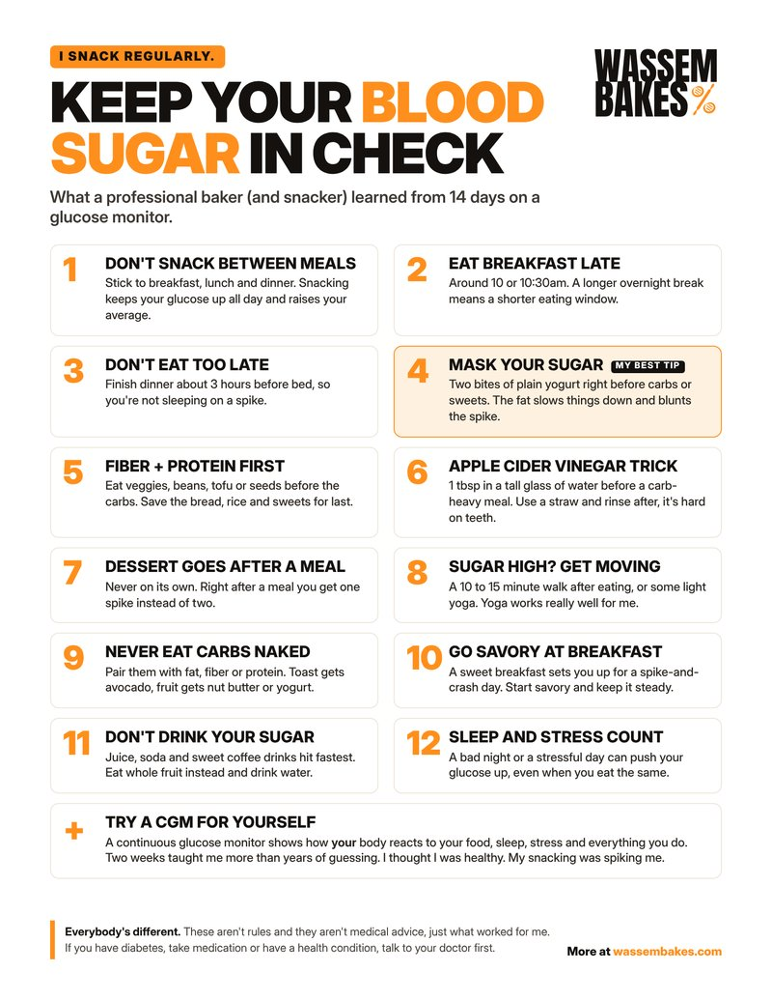

How to Keep Your Blood Sugar in Check (From a Baker Who Snacks)
I wore a glucose monitor for 14 days and found out my snacking was spiking me way more than I thought. Here are the 5 things that actually helped, plus my free printable guide.
Jump to the free printable guide ↓- Stop snacking between meals. Breakfast, lunch and dinner, that's it.
- Eat breakfast late, around 10 or 10:30, and don't eat too late before bed.
- Sugar running high? Go for a light walk or do some yoga.
- Mask your sugar with a couple bites of yogurt, and eat fiber and protein first.
I'm a baker. I snack regularly. Honestly, I thought I was in really good health.
Then I wore a continuous glucose monitor (a CGM) for 14 days, and it showed me something I didn't expect. It wasn't the big meals that were getting me. It was all the little bites in between. My snacking was pushing my glucose above the healthy range way more often than I ever would have guessed.
So I changed a few things, watched the numbers, and these are the five tips that actually made a difference for me.
Before you read: everybody's different
I'm a baker, not a doctor. These aren't rules and they aren't medical advice. They're just what I learned watching my own body for two weeks. What spikes me might not spike you, and the other way around. If you have diabetes, take medication for your blood sugar, or have any health condition, talk to your doctor before changing how you eat.
1. Don't snack between meals
Limit your eating to breakfast, lunch and dinner. That's the biggest one for me.
Here's why. Every time you eat, your glucose goes up and then comes back down. If you snack in between, it never really gets the chance to settle. On a CGM chart you can actually see this. Doctors call it the area under the curve, basically how much total sugar is sitting in your blood over the whole day. Snacking raises that area, so your average glucose ends up higher, even if no single snack looks like a big deal.
Having dessert? Eat it right after your meal instead of on its own a couple hours later. One spike instead of two.

2. Eat breakfast late
I push my breakfast to around 10 or 10:30 in the morning. It gives my body a longer break overnight, and it naturally shortens the window I'm eating in.
That also means don't eat too late before bed. Finish dinner early enough that you're not going to sleep with a spike still working its way through you.
3. Sugar high? Get moving
When I see my sugar running high, the best way I've found to bring it back down is a light walk or some yoga. Nothing intense. Your muscles use glucose when they work, so even easy movement pulls some of that sugar out of your blood.
Yoga works really, really well for me. A short session after a heavy meal and I can watch the curve flatten out on my phone.

4. My best tip: mask your sugar
This is the one I use the most. Right before I eat a heavy carb load or something sweet, I'll have two bites of yogurt. That's it. Just two bites.
The fat gets there first and slows down how fast your stomach empties, so the sugar behind it comes in slower and the spike is a lot smaller. For me it blunts the spike significantly. I use plain, unsweetened yogurt. Coconut yogurt works great, and if you want to make your own, here's how I make coconut yogurt at home.
You'll also hear about apple cider vinegar diluted in water before a meal. It works for a lot of people. I'm just not a fan. It's hard for me to get down, so I stick with the yogurt.
5. Fiber and protein first
Same idea as the yogurt. Before you eat something sweet or high carb, eat your fiber and protein first. Some vegetables, beans, seeds, tofu, a little nut butter, whatever you've got. They slow everything down, so the carbs that come after hit you softer.
And if you do snack, pick a snack that's mostly fiber or protein, not just sugar on its own.

A few more that help
Those five are the ones I lean on every day. Here are a few more worth trying:
- The apple cider vinegar trick. About a tablespoon in a tall glass of water before a carb-heavy meal. Use a straw and rinse your mouth after, because it's hard on your teeth.
- Never eat carbs naked. Pair them with fat, fiber or protein. Toast gets avocado, fruit gets nut butter or yogurt.
- Go savory at breakfast. A sweet breakfast sets you up for a spike-and-crash kind of day.
- Don't drink your sugar. Juice, soda and sweet coffee drinks hit the fastest. Eat the whole fruit instead and drink water.
- Sleep and stress count. A bad night or a stressful day can push your glucose up even when you eat exactly the same.
Try a CGM for yourself
Honestly, the best investment I made was trying a continuous glucose monitor. It's a small sensor you wear on your arm, and it shows you your glucose in real time on your phone.
That's how you find out how your body reacts to the food you eat, your sleep, your stress, your environment and everything you do. I was sure I knew. I didn't. Two weeks of real data taught me more than years of guessing.
So don't take my tips as hard rules. Use them as a starting point, and let your own numbers tell you what works for you.
Get the free printable guide
I put everything on one page: all 12 tips plus the CGM. Print it and stick it on your fridge, or save it on your phone.

Download the printable guide (PDF) →
Have you ever worn a CGM? Tell me in the comments what surprised you the most. I'd love to hear it. Thank you very much.
Keep going: Sugar in Gluten-Free Baking, Sugar-Free Protein Brownies, DIY Yogurt Substitute for Baking.